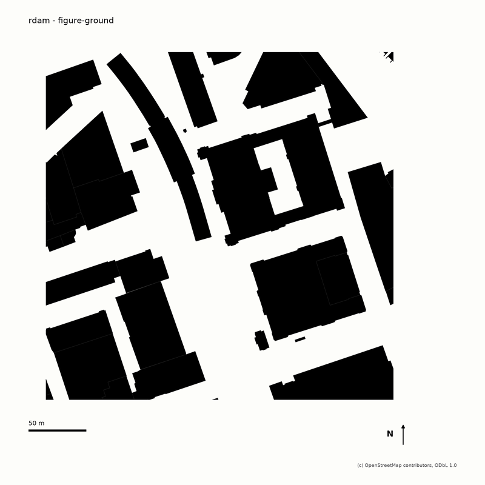
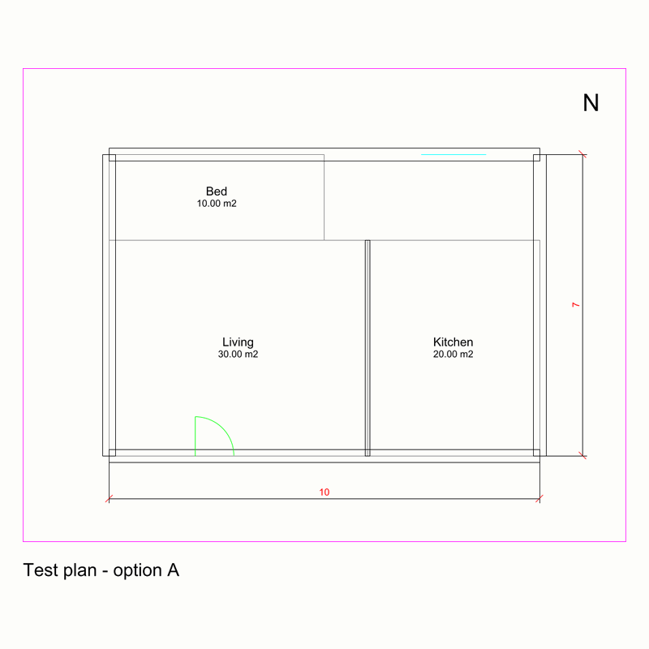
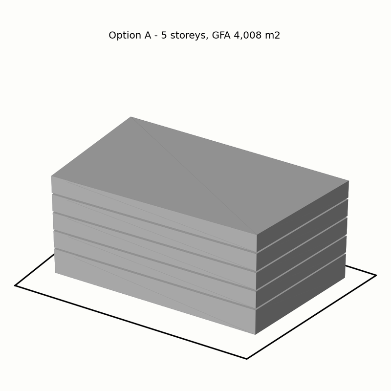
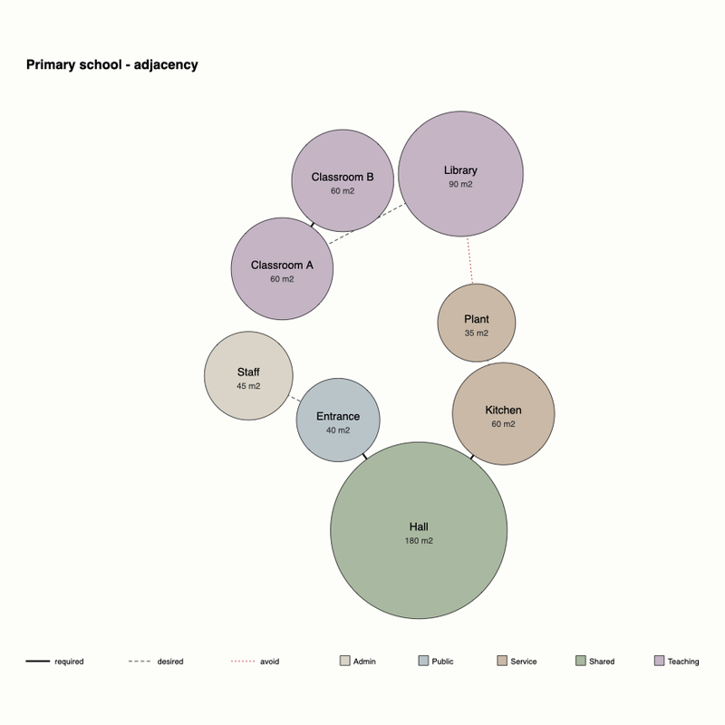

Open source / Agent Skills for architects
/architect
Agent Skills for the architect's working week,
from the first brief to the snag list.
Every number shows its basis.
Claude / Cursor / Codex / Copilot

site-map

dxf-drawing

massing-study

design-diagram
45 skills / 12 scripts / 2 agents / MIT
claude plugin install architect@gaia